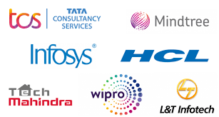

By Aditya p Updated on: November 24, 2022
This article is about the list of Top IT companies in India [Indian IT companies] based on Total Sales Before
That take
a look at the IT Industry in India. India is Home to biggest IT companies.
According to the NASSCOM Report, IT export revenues from India grew by 8.3% to an estimated $136 billion in
the fiscal year 2019. Technological innovations are reshaping the world we live in. Exponential advances
across technologies like cloud computing, artificial intelligence (AI), machine learning, robotics, IoT,
augmented and virtual reality
would continue to transform every aspect of human life. So here is the list of top software companies in
India.
List of Top IT Companies in India
Here is the list of Top 10 Biggest IT companies in India 2020. The list is ranked based on total sales in recent years. Indian IT companies are 1. Tata Consultancy service. – Largest IT company in India.
Tata Consultancy service is the Largest IT company in India in terms of Revenue. TCS is an IT services, consulting and business solutions provider that has been partnering with the world’s largest businesses in their transformation journeys for the last fifty years. TCS offers a consulting-led, cognitive powered, integrated portfolio of business, technology and engineering services and solutions. TCS is the largest company in India in terms of Market Capitalization. It is the largest in the list of top 10 IT companies in India 2020.
- Revenue: Rs 1,67,311 Cr
- Market Cap: Rs 845,337 Cr.
- Employees: 420,000
- ROE: 35.98 %
- Sales Growth (3Yrs): 10.47 %
- Promoter holding: 72.05 %

2. Infosys
Established in 1981, Infosys is an NYSE listed global consulting and IT services company with more than 228,000 employees. It is the second largest in the list of top 10 IT companies in India 2020. One of the leading software companies in India. From a capital of US$ 250 to become a US$ 11.8 bil lion (FY19 revenues) company with a market capita lization of approximately US$ 47.7 billion. It is one of the best IT company in India.
- Revenue: Rs 1,02,673 Cr
- Market Cap: Rs 282,028 Cr.
- Employees: 228,000
- ROE: 23.50 %
- Sales Growth (3Yrs): 9.81 %
- Promoter holding: 13.15 %
3. HCL Technologies
HCL Technologies is one of the best IT companies in India. The Company is a leading global IT services company that helps global enterprises re-imagine and transform their businesses through Digital technology transformation. The Company focuses on providing an integrated portfolio of services underlined by its Mode 1–2–3 growth strategy. It is the third-largest Indian top it companies.
- Revenue: Rs 76,306 Cr
- Market Cap: Rs 153,370 Cr.
- ROE: 25.76 %
- Employees: 178,000
- Sales Growth (3Yrs): 24.74 %
- Promoter holding: 60.00 %
4. Wipro Limited
Wipro Limited (NYSE: WIT, BSE: 507685, NSE: WIPRO) is a leading global information technology [Indian IT companies] consulting and business process services company. It is on the list of top 5 IT companies in India. The Company harness the power of cognitive computing, hyper-automation, robotics, cloud, analytics and emerging technologies to help clients adapt to the digital world and make them successful. It is the fourth largest Indian top it companies.
- Revenue: Rs 68,566 Cr
- Market Cap: Rs 182,028 Cr.
- ROE: 18.50 %
- Employees: 178,000
- Sales Growth (3Yrs): 4.81 %
- Promoter holding: 76.05 %
5. Redington India Ltd
Established in 1993, Redington has traversed an eventful and exciting journey to one of the best Indian IT companies. It is on the list of top 5 IT companies in India. The incredible journey has seen us emerge from one brand, one product category, and one market into a US $6.7 billion distribution and supply chain solutions provider to over 220 international brands in IT and Mobility spaces, serving 30+ emerging markets.
- Revenue: Rs 47,996 Cr.
- Market Cap: Rs 4,438 Cr.
- ROE: 15.00 %
- Employees: 178,000
- Sales Growth (3Yrs): 9.50 %
- Promoter holding: 0.00 %
6. Tech Mahindra Ltd
Tech Mahindra represents the connected world, offering innovative and customer-centric information technology experiences, enabling Enterprises, Associates and the Society to Rise™. The company is a 9 billion company with 125,700+ professionals across 90 countries, helping 941 global customers including Fortune 500 companies. It is one of the best IT company in India. Tech Mahindra is a part of mahindra Group.
- Revenue: Rs 38,643 Cr
- Market Cap: Rs 70,141 Cr.
- ROE: 21.58 %
- Employees: 125,700
- Sales Growth (3Yrs): 9.45 %
- Promoter holding: 35.88 %